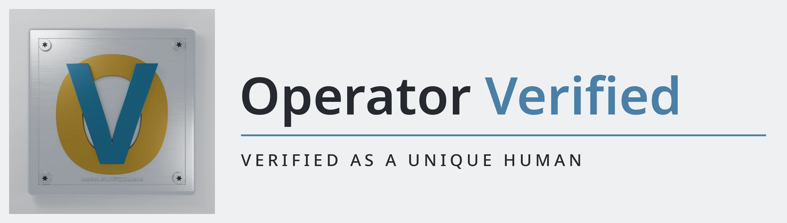

Agents are starting to act for people in public.
Operator Verified — named for the one claim it stands for, verified as a unique human — is a small open-source program building, in the open, the pieces that let anyone check that the operator behind an agent was verified as a unique human.
Almost nobody can check that a unique human stands behind an agent
When an AI agent joins a server, sends a message, or publishes under someone's direction, there is usually no public way to check that a real, unique human backs it. We searched the public record on October 25, 2026: the registry of agent services linked from the official AgentKit ecosystem page listed five services, and we found no public implementation at all for messaging attestation, email trust, telephony verification, content provenance, or agent-to-agent trust between different people's agents. Absence here means nothing public was found, not that nothing exists anywhere.
One claim, stated exactly — and its limits in the same breath
What it proves
An attestation proves a unique human registered the wallet that signed it. The operator was verified as a unique human. Checks are resolved live against the registry at verification time.
What it does not prove
It does not prove the human wrote any particular message, endorses any particular output, or controls the agent at this moment. It is not identity verification: it establishes that a unique human backs the operator, never who that human is.
What this program does not have
This program has no token. Nothing here is for sale as a token, and no page in this program presents a proof as granting privileges.
Built in waves, in public
Wave 1: a verify core and badge service (inside the first project), Fiador (human-backed attestation for Discord bots), a presence approval inbox, a provenance seal for agent-written content, and a callback-verified executive assistant. Wave 2 adds agent-to-agent introductions and fleet identity surfaces. Wave 3 adds mini apps and an attribute concierge. Each project's state is dated and shown on its card; the public page and the program's internal record use the same words.
Projects
Fiador
Fiador is the program's human-backed attestation for Discord bots: the guarantor pattern for agents. An operator signs an attestation binding their registered wallet to their bot; any server can check it.
Presence approval inbox
A human approves an agent's sensitive action — publishing, spending, sending as them — by proving their presence, with the approval bound to the exact action.
Provenance seal
A signed seal for agent-written content: proves an agent wallet signed these exact words, and never claims the human wrote them.
The devlog
Posted weekly. Every post is drafted from work that was verified that week, and published only after the author approves the text.
Three ways in
Server admins
The verifier is planned as a package you run yourself, plus a no-install verify page. Design stage; the project page says plainly what exists and what does not.
Checking the sources
Every underlying claim can be checked against the official material, linked descriptively.